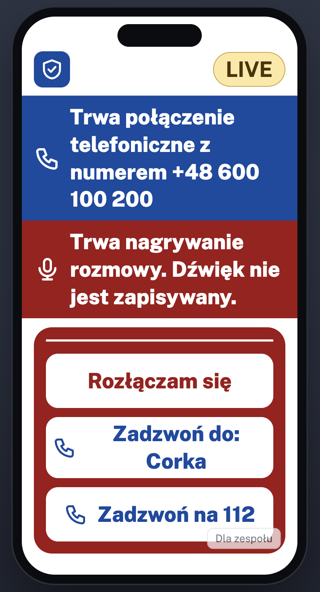
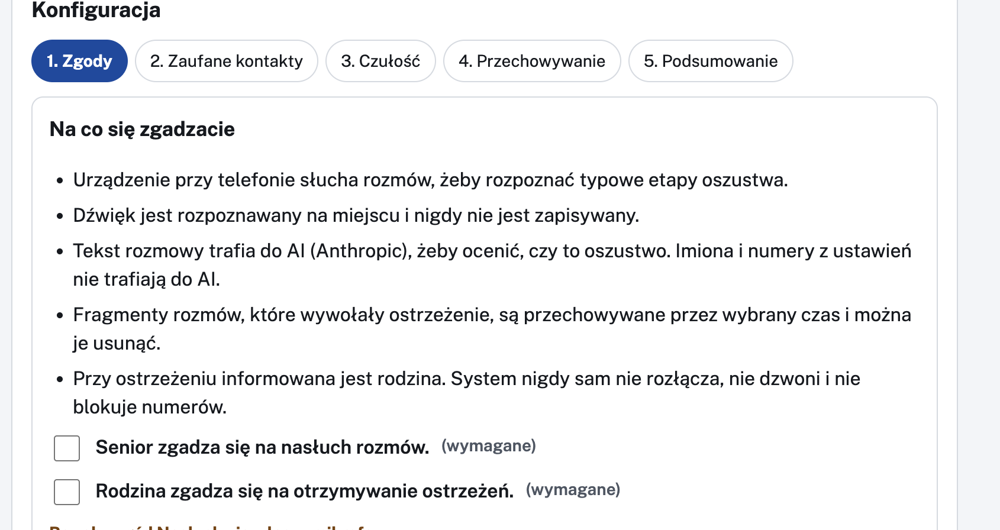
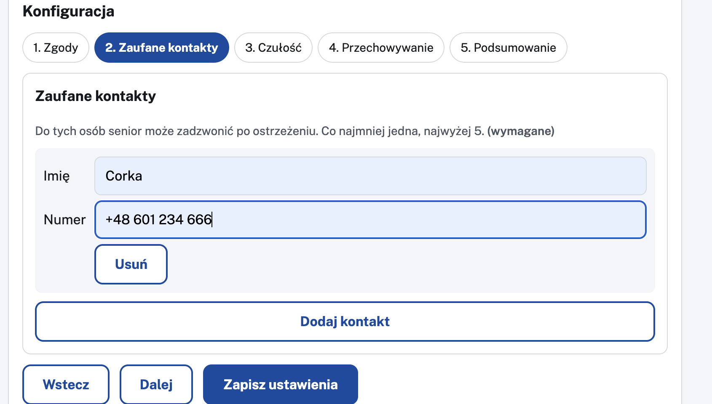
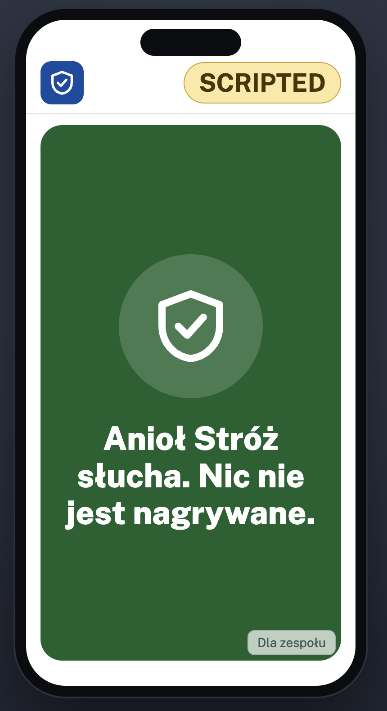
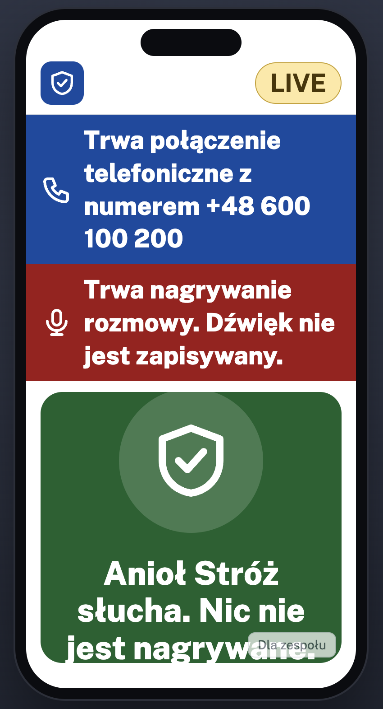
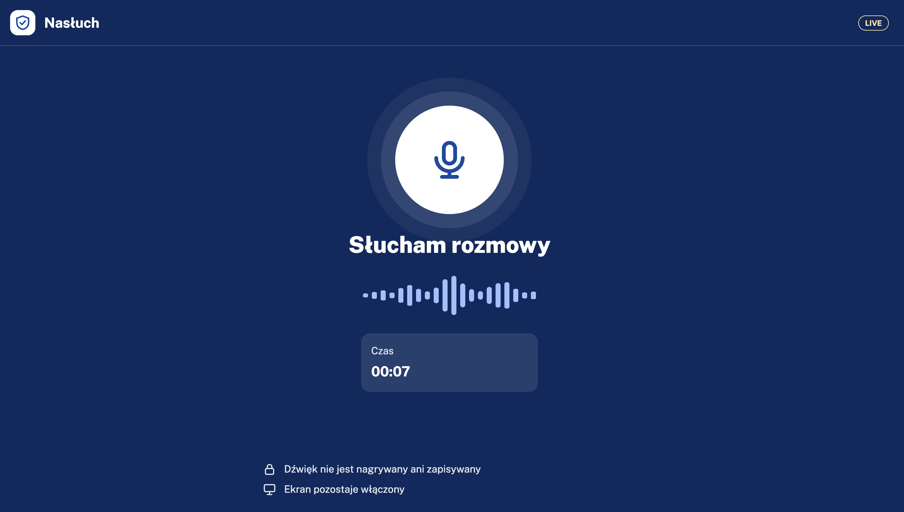
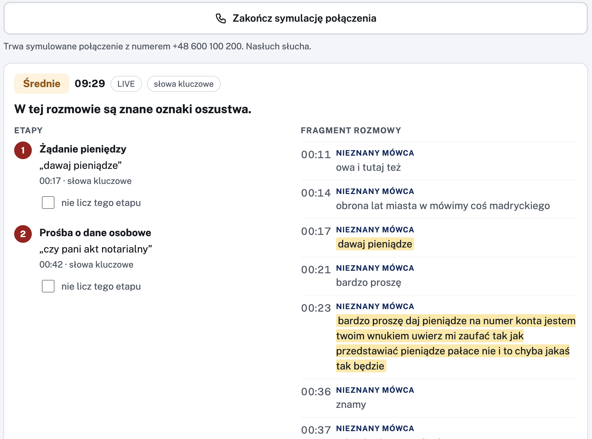
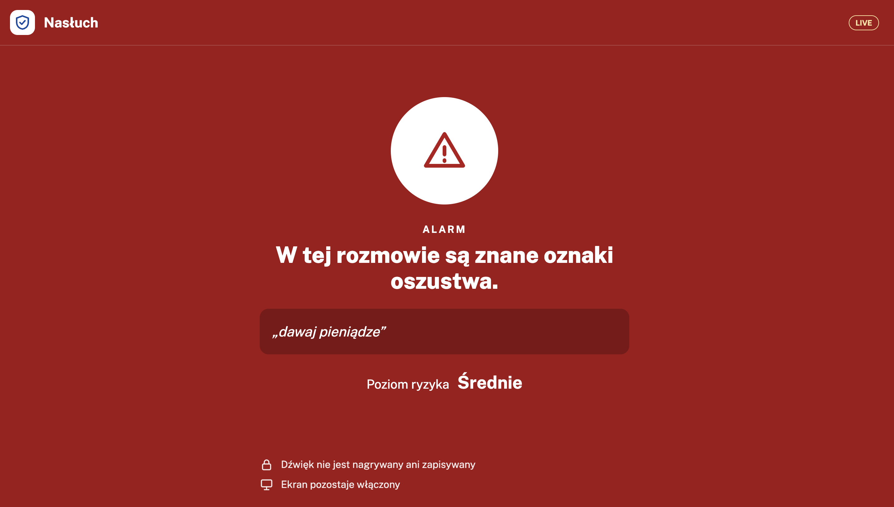
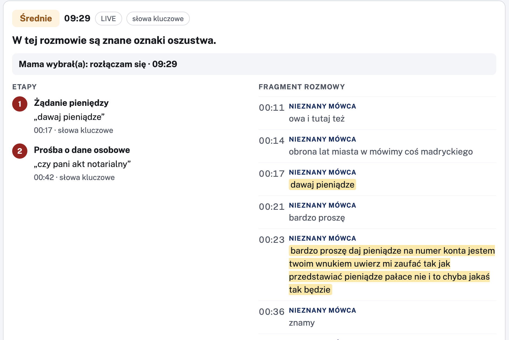
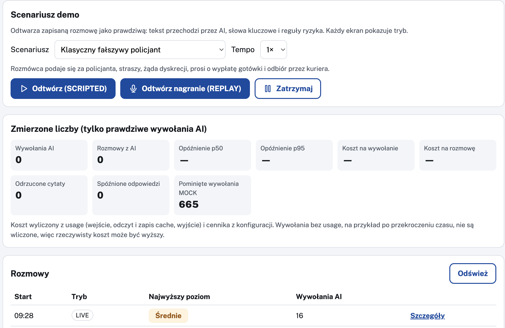

Ostrzega seniora w trakcie rozmowy.
Pokazuje dosłowne słowa oszusta.
Decyzję zawsze podejmuje człowiek.
HackYeah 2026 · Open Task „Artificial Intelligence”
Nie zainstaluje aplikacji na smartfonie. Ochrona musi stać obok jego telefonu, a nie w nim.
Bez instalacji u seniora.
Mikrofon przy głośniku. Dźwięk zostaje lokalnie.
AI znajduje cytat, kod liczy ryzyko.
Ten sam alert, w tej samej chwili.
Alert pokazuje dosłowne słowa oszusta, więc senior i rodzina sami oceniają sytuację.
„Rozłączam się”, „Zadzwoń do bliskiej osoby”, „Zadzwoń na 112”. Duże przyciski, głos, mało tekstu.
System nigdy nie rozłącza, nie dzwoni i nie blokuje numerów.

1 · Zgody. Zgoda seniora i rodziny jest wymagana. Opisujemy wprost, co robi system i czego nie robi.

2 · Zaufane kontakty. Do nich senior może zadzwonić po ostrzeżeniu.

Czuwanie
Trwa połączenie
Nasłuch: „Słucham rozmowy”Połączenie uruchamia nasłuch. Dźwięk zamienia się w tekst na miejscu (Vosk, offline) i trafia do analizy tylko jako tekst.

Rodzina: poziom, etapy, cytaty
Nasłuch: alarmPoziom ryzyka liczy deterministyczny kod. Każdy etap ma dosłowny cytat.

Raport: „Mama wybrała: rozłączam się”
Audyt: każde wywołanie AI jest zapisaneCytat, którego nie ma w transkrypcji, nie wpływa na ryzyko. AI nie może „zmyślić” dowodu.
Gdy AI zawodzi: „Podstawowa ochrona (bez AI)” i dalej działają słowa kluczowe. Nigdy cichy zielony.
Mikrofon, PCM 16 kHz, WebSocket
etap + cytat
Trzy aplikacje z jednej bazy kodu Angular. Klucze API tylko w zmiennych środowiskowych.
Tryb kiosku, push i SMS do rodziny.
Małe urządzenie przy telefonie, bez osobnego tabletu.
Przychodzące połączenie samo uruchamia nasłuch.
Decyzje rodziny jako etykiety do oceny, nowe scenariusze, rubryka.